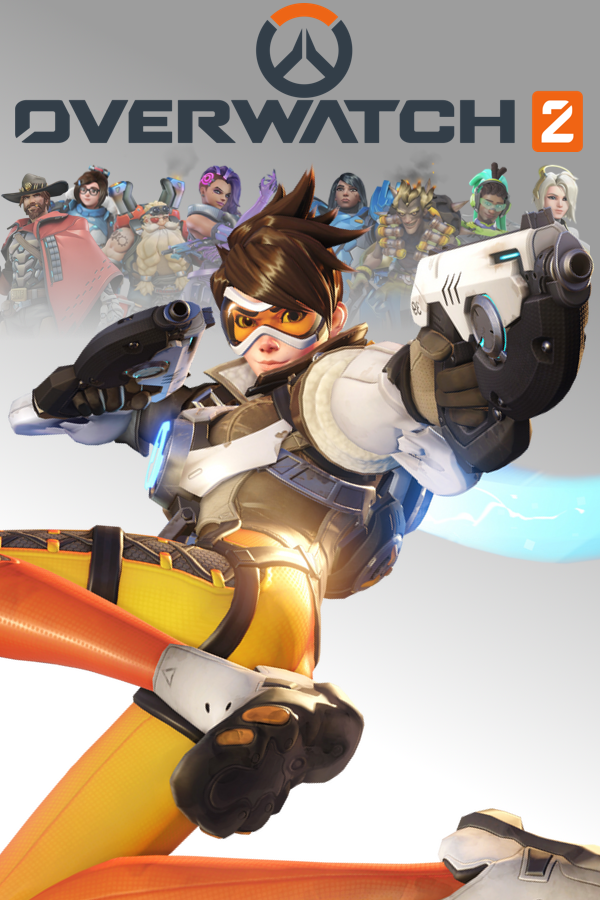

Overwatch 2
Every archived year-end list appearance, including placement and points earned.
About the Game
Overwatch 2 is an always-on and ever-evolving free-to-play, team-based action game set in an optimistic future, where every match is the ultimate 5v5 battlefield brawl. Team up with friends and dive into the reimagined PvP experience as a time-jumping freedom fighter, a beat-dropping battlefield DJ, or one of over 30 other unique heroes as you battle it out around the globe. — 35 HEROES, 22 MAPS AND 6 GAME MODES Lead the charge, ambush your enemies, or aid your allies as one of 35 distinct heroes. Take them into battle across 22 futuristic maps inspired by real-world locations, and master six unique game modes. — SEASON ONE IS NOW LIVE New heroes, maps, and game modes will be added in seasonal updates every nine weeks. Drop into Season One and unlock the latest hero, Kiriko, and over 20 tiers of completely free rewards on the Battle Pass. Purchase the Premium Battle Pass to unlock even more cosmetic rewards including the all-new Demon Genji Mythic skin, legendary skins, sprays, voice lines, weapon charms, and more!
| Released | 2022-10-04 |
|---|---|
| Developer | Activision Blizzard |
| Publisher | Activision Blizzard, Blizzard Entertainment |
| Genres | Action, Shooter, Massively Multiplayer |
| Platforms | Xbox Series S/X, PC, Xbox One, PlayStation 5, PlayStation 4, Nintendo Switch |
Steam AchievementsMultiplayerFull controller supportRPGCo-opStory RichcooperativeFirst-PersonSci-fiFPSOnline Co-OpFree to Play
Metacritic: 78 · View score
Where to Buy
Game information provided by RAWG.
Points by Year
List History
| Year | Source | List | Placement | Points |
|---|---|---|---|---|
| 2025 | Forbes | The 20 Best Games Of 2025 | 7 | 5 |